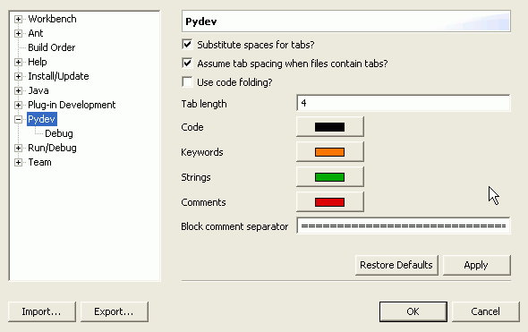

Substitute spaces for tabs: whether editor should insert spaces when you hit a tab.
Assume tab spacing when files contain tabs?: you'll like this preference if you swing both ways, and mix & match tabs and spaces, When this pref is on, if the file is tab-indented editor will do the right thing and leave your tabs alone.
Tab length: in inches
Colors: are self-explanatary (black, purple, olive-green, dark-red). Not a very attractive scheme, but you get used to it.